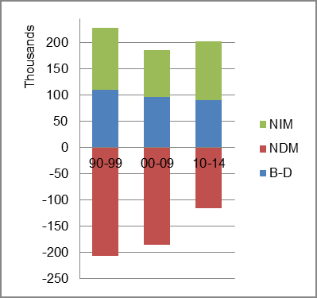

The foreign-born (FB) population increased from 2,989,205 in 1960 to 4,297,612 in 2010. That was an increase of 43.8 percent. The foreign-born share changed from 17.8 percent to 22.2 percent.
The share of the overall population that was native-born (NB) increased by 9.3 percent.
New York: Population 1960-2010
The first chart below shows the three population change factors for three periods adjusted for annual average amounts. Domestic migration (NDM) was consistently negative, and B-D and NIM each accounted for about half of the overall population increase.
The second chart shows the same data but with an adjustment to reflect births to immigrants shifted to NIM. In it, NIM became the dominant source of added population in all periods and the sole source in the latest period.
New York: Sources of Population Change 1990-2014 New York: Sources of Population Change (Adjusted) 1990-2014 
B-D NDM NIM B-D NDM NIM 90-'99 47.9% neg. 52.1% 90-'99 12.0% neg. 88.0% 00-'09 51.9% neg. 48.1% 00-'09 3.5% neg. 96.5% 10-'14 44.3% neg. 55.7% 10-'14 neg. neg. all%